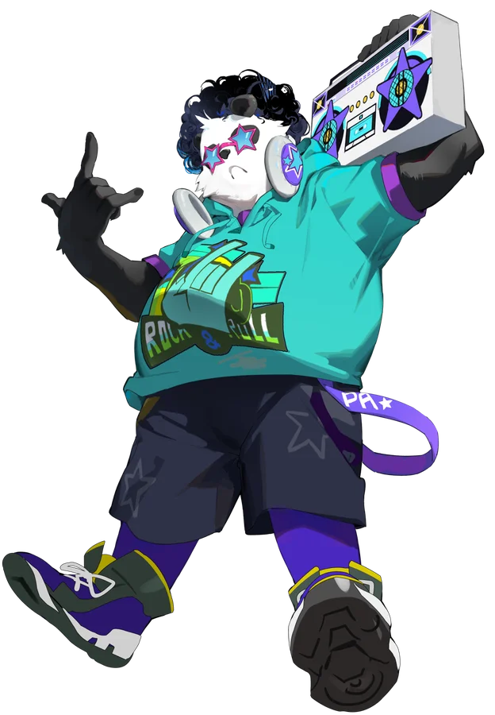
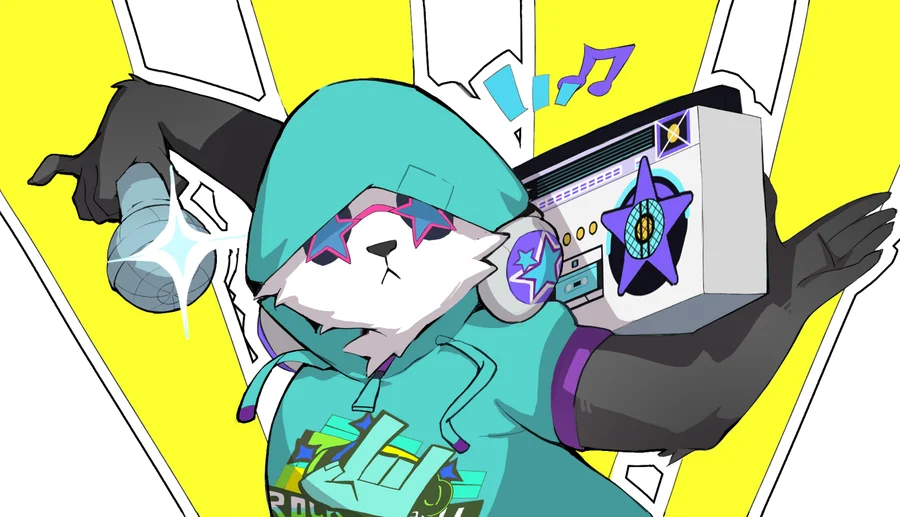
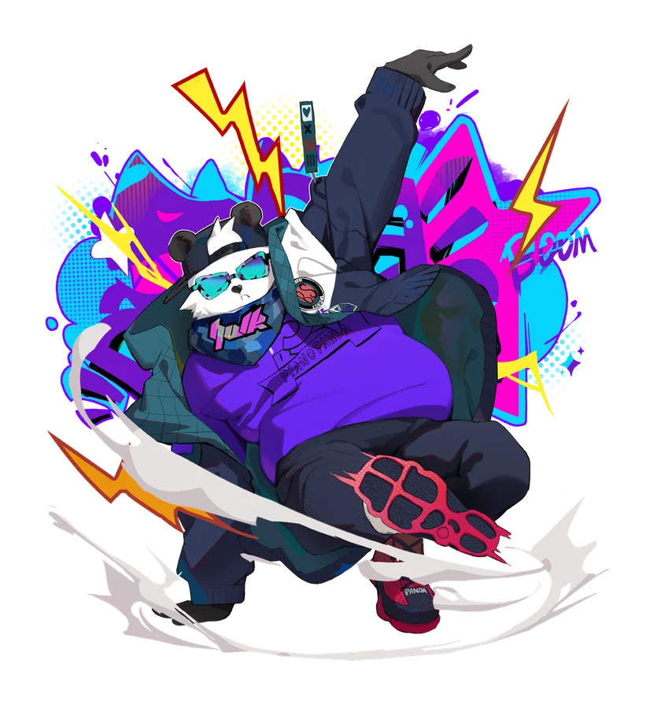
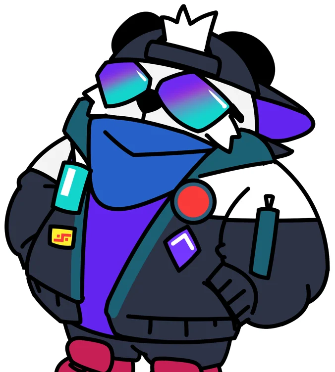

角色官方原文 ↗
潘大猛 · 肉弹战车
土生土长的联合城人。街舞、摇滚、二次元文化都是其最爱。平时会在街区做街舞表演和义工，偶尔也去枫的酒店打工，毕竟他的爱好都挺花钱的。
编号110时期第一期性别男生日10月1日组织联合城,隆兴饭店喜欢绿叶蔬菜
攻击1
防御0
生命14
主动搞事情冷却 4
获得自爆或以牙还牙中的随机1张。
PVE获得巧克力蛋糕或汉堡中的随机1张。
被动有好有坏
所有回血效果+2，但是受到伤害也会+1。
PVE使用汉堡、巧克力蛋糕后，恢复5格内所有友方角色2点生命值。
潜能激发
吃下食物时获得1层反击，如果该食物为汉堡额外获得生命值上限+2。 使用主动技能时，嘲讽5格范围内的怪物1回合。 反击时，根据本次受到的伤害等量增加攻击力。
基础资料
姓名潘大猛
英文名Pandaman
日文名パンダマン
从属组织联合城,隆兴饭店
上线时间2024-02-29
喜欢食物绿叶蔬菜
初始骰子磁带盒骰子
礼物浴室鸭、小熊玩偶、小怪兽手办
徽章山峦、月光
PVE 特性
- 达到1星时防御力+1
- 达到2星时移动速度+1，生命值上限+1
- 达到3星时攻击力+1、防御力+1、移动速度+1
默认



羁绊皮肤

共 9 个表情，点击可放大。

官方 wiki 没有这角色的 /获取 页，头像、名片、卡牌、骰子的完整清单暂缺；下方「档案」里保留了画廊中的零散素材。
人物传记
你可以在周末下午去联合城凰区的三神广场看他的表演。
画廊其他素材
本地未收录该角色的语音台词。